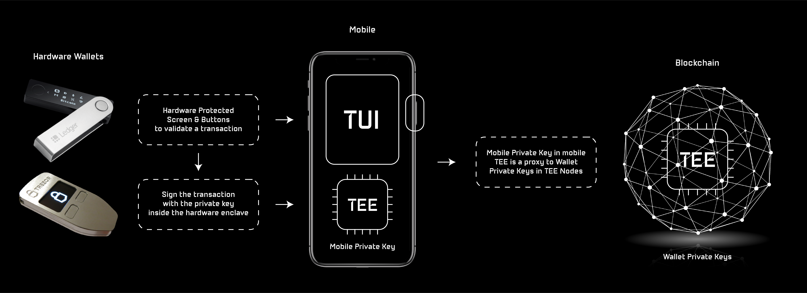

Introduction
“The blockchain ecosystem needs an easy to use interface with hardware wallet security to reach the mass market.”
The main pain points of non-custodial wallet solutions still are:
- User experience Can an easy to set-up wallet be an efficient customer acquisition tool for DeFi players?
- Security Are cryptocurrency wallets more at risk than ever?
We think that current wallet solutions slow down the DeFi adoption.
Interstellar is a novel non-custodial peace of mind mobile wallet with a hardware security level. Based on a Substrate blockchain and SubstraTEE/IntegriTEE workers.
We can now provide the same hardware security level as hardware wallets with only a mobile and a blockchain

Thanks to Trusted User Interface TUI on mobile and Trusted Execution Environment on both mobile and blockchain nodes
Because TUI is not yet avalaible on all mobile devices we use a Garbled Circuit/Visual Cryptography scheme which provides an alternative that will be complementary down the road to mitigate potential flaws in TUI.
Features:
-
Hardware security Level - TEE on nodes and mobiles (incl. TUI), garbled circuits and visual cryptography secure interface
-
Just download an app - no registration, PIN, password, passphrase, private key or any secret to store or remember
-
Multichain Wallet - securely store and interact with native cryptocurrency coins and tokens from multiple blockchains
-
Confirm a transaction with ONLY ONE SCREEN - no SMS to wait for, no additional 2FA app to use, no QR code to scan
-
Up to 1,000,000 tps - no tps limit due to slow consensus, thanks to IntegriTEE layer 2 based on hardware enclave technology
-
Social Recovery Service - leverages the existing Substrate pallet and a novel decentralized autonomous recovery service
-
Features to securely send coins with social network messages (even to persons with no-wallet) - explained in Can an easy to set-up wallet be an efficient customer acquisition tool for DeFi players?
Our solution is designed to support blockchain and DeFi mass market adoption with:
- A decentralized key & asset management service where the user’s privates keys and signature programs are stored and executed in TEE nodes
- A decentralized Trusted Transaction Validation protocol that leverages TEE and TUI features on mobile, combined with One Time Garbled Circuits and Visual Cryptography to provide a Trusted Authentication and Trusted UI layer on user devices